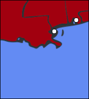
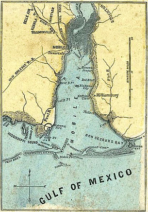
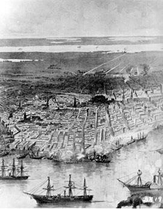

| Union | August 2-23, 1864 | Confederate |
|---|---|---|
David Farragut (navy) Gordon Granger (army) | Commanders | Franklin Buchanan (navy) Richard L. Page (army) |
12 wooden ships 2 gunboats 4 ironclad monitors 5,500 men | Strength | 3 gunboats1 ironclad 1,500 men |
328 1 ironclad sunk | Casualties and Losses | 35 1 gunboat destroyed |
Early in the war, the Confederates decided not to defend the entire bay, but instead to focus only on a few key harbors and ports. The city became an excellent place for blockade running: quickly sailing to the Caribbean to trade, while avoiding the Union ships. The Federals wanted to end the blockade running and so an attack was planned, a cooperation between the army and the navy.
On August 3, Granger's land forces were ready to attack, but Farragut wanted to wait for his fourth monitor to arrive. He nearly decided to proceed with only three, causing Granger and his troops to go ashore early and allow the defenders time to receive reinforcements. When the fourth monitor, the USS Tecumseh, arrived, Farragut made the decision to tie his boats together in pairs. The idea was that if one boat's engines stopped, the other could keep them both going. On August 5, the ships entered the harbor, receiving a lot of fire. After passing the forts, however, Farragut forced the Confederate navy to surrender. While the port was closed, the city remained under Rebel control.

| Union | April 25-May 1, 1862 | Confederate |
|---|---|---|
| David G. Farragut Benjamin Butler | Commanders | Mansfield Lovell |
| 43 ships | Strength | 3,000 |
| 0 | Casualties and Losses | 0 |
New Orleans was one of the most important transportation centers in the early U.S., particularly in shipping cotton. The invention of the steamboat, able to go upstream, made two-way trade possible. The election of Lincoln in the 1860 presidential election inspired governor Thomas Overton Moore to make New Orleans a free city, neutral in the upcoming war. On January 8, Moore ordered troops to take over various Federal forts and arsenals. Louisiana seceded from the Union 18 days later.
In January of 1862, Farragut assembled a fleet of 43 boats (mostly gunboats and mortar boats) near the Gulf Coast and the lower Mississippi River. The Mississippi was protected by two permanent fort, Fort Jackson and Fort St. Philip. These forts were attacked by the Union fleet on April 19, 1862. Even after two days of bombardement, the forts were damaged but not fallen. Another crucial obstacle for the Federal fleet was the boom stretched between the forts: heavy chains that stretched across the water to keep ships from entering the river. On the night of April 23, two gunboats blasted a hole in the boom, allowing the fleet to enter the next day. Isolated and being constantly bombarded, the forts surrendered on April 28. Lovell withdrew his 3,000 troops to the north. On May 1, Butler led his 15,000 troops in to take control of the city itself.
New Orleans remained under Union control for the rest of the war. The permanent loss of it was one of the worst disasters to happen to the Confederates.
